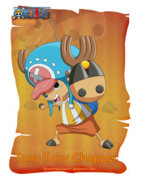

托尼托尼·乔巴
年龄：15岁→17岁
生日：12月24日
血型：X型
身份：磁鼓岛医生→草帽一伙船医
故乡：伟大航路▪磁鼓岛（冬岛、樱花之国）
身高：因身体变化而变化
喜欢的食物：棉花糖，巧克力，所有甜的食物
特长：医术
梦想：成为万能药（不管什么病都能治的医生）
恶魔果实：动物系▪人人果实
悬赏：50（司法岛事件）→100（德雷斯罗萨篇
原为磁鼓岛Dr.库蕾哈医生最宠爱的驯鹿兼医疗助手。乔巴的恩人是“庸医”希鲁鲁克医生，
他身为野生驯鹿时本来没有名字，“乔巴”也是由希鲁鲁克给他命名的，
意思是他有一对连树木都可以轻松砍倒的角。
乔巴的特征是蓝色的鼻子和一顶画有“X”标记的粉红色帽子。本身很怕热，
所以喜欢的岛屿是春天的冬岛。是草帽一伙年龄最小的成员。人兽型的姿态下，
则是伙伴中身材最矮小的成员。其梦想是成为“万能药”。（不管什么病都能治的医生）
